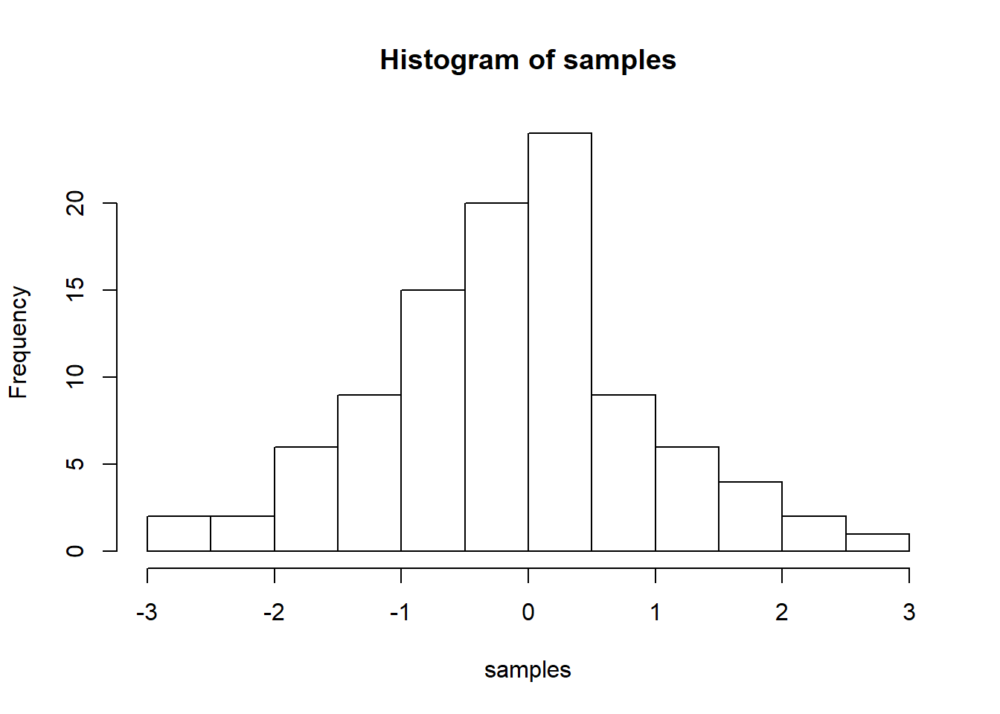

1+1## [1] 289392-8373 ## [1] 810194*3## [1] 12122/12## [1] 10.16667mel <-1
other<-23456789
a<-1
b<-20
c<-40
a+b## [1] 21c-b## [1] 20other/c ## [1] 586419.7(a+c)/b## [1] 2.05for(i in 1:100)
print (i)## [1] 1
## [1] 2
## [1] 3
## [1] 4
## [1] 5
## [1] 6
## [1] 7
## [1] 8
## [1] 9
## [1] 10
## [1] 11
## [1] 12
## [1] 13
## [1] 14
## [1] 15
## [1] 16
## [1] 17
## [1] 18
## [1] 19
## [1] 20
## [1] 21
## [1] 22
## [1] 23
## [1] 24
## [1] 25
## [1] 26
## [1] 27
## [1] 28
## [1] 29
## [1] 30
## [1] 31
## [1] 32
## [1] 33
## [1] 34
## [1] 35
## [1] 36
## [1] 37
## [1] 38
## [1] 39
## [1] 40
## [1] 41
## [1] 42
## [1] 43
## [1] 44
## [1] 45
## [1] 46
## [1] 47
## [1] 48
## [1] 49
## [1] 50
## [1] 51
## [1] 52
## [1] 53
## [1] 54
## [1] 55
## [1] 56
## [1] 57
## [1] 58
## [1] 59
## [1] 60
## [1] 61
## [1] 62
## [1] 63
## [1] 64
## [1] 65
## [1] 66
## [1] 67
## [1] 68
## [1] 69
## [1] 70
## [1] 71
## [1] 72
## [1] 73
## [1] 74
## [1] 75
## [1] 76
## [1] 77
## [1] 78
## [1] 79
## [1] 80
## [1] 81
## [1] 82
## [1] 83
## [1] 84
## [1] 85
## [1] 86
## [1] 87
## [1] 88
## [1] 89
## [1] 90
## [1] 91
## [1] 92
## [1] 93
## [1] 94
## [1] 95
## [1] 96
## [1] 97
## [1] 98
## [1] 99
## [1] 100seq(1,100)## [1] 1 2 3 4 5 6 7 8 9 10 11 12 13 14 15 16 17
## [18] 18 19 20 21 22 23 24 25 26 27 28 29 30 31 32 33 34
## [35] 35 36 37 38 39 40 41 42 43 44 45 46 47 48 49 50 51
## [52] 52 53 54 55 56 57 58 59 60 61 62 63 64 65 66 67 68
## [69] 69 70 71 72 73 74 75 76 77 78 79 80 81 82 83 84 85
## [86] 86 87 88 89 90 91 92 93 94 95 96 97 98 99 100sum(i)## [1] 100sum(1:100)## [1] 5050sum(seq(1,100))## [1] 5050sum(1:100)## [1] 5050sum(5:500)## [1] 125240sum(2:4)## [1] 9EvenNumbers<-c()
for(i in 1:100){
if (i%%2 ==0){
EvenNumbers<-c(EvenNumbers,i)
}
}
EvenNumbers## [1] 2 4 6 8 10 12 14 16 18 20 22 24 26 28 30 32 34
## [18] 36 38 40 42 44 46 48 50 52 54 56 58 60 62 64 66 68
## [35] 70 72 74 76 78 80 82 84 86 88 90 92 94 96 98 100AllNumbers<-c()
for(i in 1:1000){
AllNumbers<-c(AllNumbers,i)
}
PrimeNumbers<-c()
for (j in AllNumbers){
if(j %/% 2 || j%/% 3)
PrimeNumbers<-c(AllNumbers,j)
}
PrimeNumbers## [1] 1 2 3 4 5 6 7 8 9 10 11 12 13
## [14] 14 15 16 17 18 19 20 21 22 23 24 25 26
## [27] 27 28 29 30 31 32 33 34 35 36 37 38 39
## [40] 40 41 42 43 44 45 46 47 48 49 50 51 52
## [53] 53 54 55 56 57 58 59 60 61 62 63 64 65
## [66] 66 67 68 69 70 71 72 73 74 75 76 77 78
## [79] 79 80 81 82 83 84 85 86 87 88 89 90 91
## [92] 92 93 94 95 96 97 98 99 100 101 102 103 104
## [105] 105 106 107 108 109 110 111 112 113 114 115 116 117
## [118] 118 119 120 121 122 123 124 125 126 127 128 129 130
## [131] 131 132 133 134 135 136 137 138 139 140 141 142 143
## [144] 144 145 146 147 148 149 150 151 152 153 154 155 156
## [157] 157 158 159 160 161 162 163 164 165 166 167 168 169
## [170] 170 171 172 173 174 175 176 177 178 179 180 181 182
## [183] 183 184 185 186 187 188 189 190 191 192 193 194 195
## [196] 196 197 198 199 200 201 202 203 204 205 206 207 208
## [209] 209 210 211 212 213 214 215 216 217 218 219 220 221
## [222] 222 223 224 225 226 227 228 229 230 231 232 233 234
## [235] 235 236 237 238 239 240 241 242 243 244 245 246 247
## [248] 248 249 250 251 252 253 254 255 256 257 258 259 260
## [261] 261 262 263 264 265 266 267 268 269 270 271 272 273
## [274] 274 275 276 277 278 279 280 281 282 283 284 285 286
## [287] 287 288 289 290 291 292 293 294 295 296 297 298 299
## [300] 300 301 302 303 304 305 306 307 308 309 310 311 312
## [313] 313 314 315 316 317 318 319 320 321 322 323 324 325
## [326] 326 327 328 329 330 331 332 333 334 335 336 337 338
## [339] 339 340 341 342 343 344 345 346 347 348 349 350 351
## [352] 352 353 354 355 356 357 358 359 360 361 362 363 364
## [365] 365 366 367 368 369 370 371 372 373 374 375 376 377
## [378] 378 379 380 381 382 383 384 385 386 387 388 389 390
## [391] 391 392 393 394 395 396 397 398 399 400 401 402 403
## [404] 404 405 406 407 408 409 410 411 412 413 414 415 416
## [417] 417 418 419 420 421 422 423 424 425 426 427 428 429
## [430] 430 431 432 433 434 435 436 437 438 439 440 441 442
## [443] 443 444 445 446 447 448 449 450 451 452 453 454 455
## [456] 456 457 458 459 460 461 462 463 464 465 466 467 468
## [469] 469 470 471 472 473 474 475 476 477 478 479 480 481
## [482] 482 483 484 485 486 487 488 489 490 491 492 493 494
## [495] 495 496 497 498 499 500 501 502 503 504 505 506 507
## [508] 508 509 510 511 512 513 514 515 516 517 518 519 520
## [521] 521 522 523 524 525 526 527 528 529 530 531 532 533
## [534] 534 535 536 537 538 539 540 541 542 543 544 545 546
## [547] 547 548 549 550 551 552 553 554 555 556 557 558 559
## [560] 560 561 562 563 564 565 566 567 568 569 570 571 572
## [573] 573 574 575 576 577 578 579 580 581 582 583 584 585
## [586] 586 587 588 589 590 591 592 593 594 595 596 597 598
## [599] 599 600 601 602 603 604 605 606 607 608 609 610 611
## [612] 612 613 614 615 616 617 618 619 620 621 622 623 624
## [625] 625 626 627 628 629 630 631 632 633 634 635 636 637
## [638] 638 639 640 641 642 643 644 645 646 647 648 649 650
## [651] 651 652 653 654 655 656 657 658 659 660 661 662 663
## [664] 664 665 666 667 668 669 670 671 672 673 674 675 676
## [677] 677 678 679 680 681 682 683 684 685 686 687 688 689
## [690] 690 691 692 693 694 695 696 697 698 699 700 701 702
## [703] 703 704 705 706 707 708 709 710 711 712 713 714 715
## [716] 716 717 718 719 720 721 722 723 724 725 726 727 728
## [729] 729 730 731 732 733 734 735 736 737 738 739 740 741
## [742] 742 743 744 745 746 747 748 749 750 751 752 753 754
## [755] 755 756 757 758 759 760 761 762 763 764 765 766 767
## [768] 768 769 770 771 772 773 774 775 776 777 778 779 780
## [781] 781 782 783 784 785 786 787 788 789 790 791 792 793
## [794] 794 795 796 797 798 799 800 801 802 803 804 805 806
## [807] 807 808 809 810 811 812 813 814 815 816 817 818 819
## [820] 820 821 822 823 824 825 826 827 828 829 830 831 832
## [833] 833 834 835 836 837 838 839 840 841 842 843 844 845
## [846] 846 847 848 849 850 851 852 853 854 855 856 857 858
## [859] 859 860 861 862 863 864 865 866 867 868 869 870 871
## [872] 872 873 874 875 876 877 878 879 880 881 882 883 884
## [885] 885 886 887 888 889 890 891 892 893 894 895 896 897
## [898] 898 899 900 901 902 903 904 905 906 907 908 909 910
## [911] 911 912 913 914 915 916 917 918 919 920 921 922 923
## [924] 924 925 926 927 928 929 930 931 932 933 934 935 936
## [937] 937 938 939 940 941 942 943 944 945 946 947 948 949
## [950] 950 951 952 953 954 955 956 957 958 959 960 961 962
## [963] 963 964 965 966 967 968 969 970 971 972 973 974 975
## [976] 976 977 978 979 980 981 982 983 984 985 986 987 988
## [989] 989 990 991 992 993 994 995 996 997 998 999 1000 1000sieve <- function(n)
{
n <- as.integer(n)
if(n > 1e6) stop("n too large")
primes <- rep(TRUE, n)
primes[1] <- FALSE
last.prime <- 2L
for(i in last.prime:floor(sqrt(n)))
{
primes[seq.int(2L*last.prime, n, last.prime)] <- FALSE
last.prime <- last.prime + min(which(primes[(last.prime+1):n]))
}
which(primes)
}
sieve(1000)## [1] 2 3 5 7 11 13 17 19 23 29 31 37 41 43 47 53 59
## [18] 61 67 71 73 79 83 89 97 101 103 107 109 113 127 131 137 139
## [35] 149 151 157 163 167 173 179 181 191 193 197 199 211 223 227 229 233
## [52] 239 241 251 257 263 269 271 277 281 283 293 307 311 313 317 331 337
## [69] 347 349 353 359 367 373 379 383 389 397 401 409 419 421 431 433 439
## [86] 443 449 457 461 463 467 479 487 491 499 503 509 521 523 541 547 557
## [103] 563 569 571 577 587 593 599 601 607 613 617 619 631 641 643 647 653
## [120] 659 661 673 677 683 691 701 709 719 727 733 739 743 751 757 761 769
## [137] 773 787 797 809 811 821 823 827 829 839 853 857 859 863 877 881 883
## [154] 887 907 911 919 929 937 941 947 953 967 971 977 983 991 997sample(1:1000000, 100, replace=FALSE)## [1] 824199 953559 569517 737397 591617 361169 459965 523482 895283 451197
## [11] 168540 356066 581545 72204 193354 59216 338358 738904 378816 396137
## [21] 711525 954496 710994 305607 705437 370913 651669 179714 885811 950903
## [31] 470108 638451 328872 961667 784623 740409 445111 693786 671529 593376
## [41] 554183 523662 132980 618024 805259 493009 570911 210555 167397 807282
## [51] 342161 871112 745763 705278 118678 594317 409236 940025 671476 17053
## [61] 989979 411074 385502 304885 975510 183573 742093 242766 734582 786582
## [71] 721914 755231 447477 450553 192898 271126 533610 924007 193656 318398
## [81] 721613 180389 915412 981807 771724 547721 68107 148357 780442 631061
## [91] 762379 98946 726641 856258 834970 347480 924561 260963 827620 121073sample(1:10000, 100, replace=TRUE)## [1] 343 6059 1034 9002 4857 6106 1648 1383 8244 9434 5017 4302 6809 9834
## [15] 7994 656 9073 4555 7504 8979 85 4136 3282 4503 1241 5047 3890 392
## [29] 4879 2935 7609 8219 495 6289 5000 3753 2332 9565 3826 469 751 6047
## [43] 535 7835 1298 1172 3323 322 3131 5254 5018 3965 7378 3903 4657 3581
## [57] 9638 5664 1360 507 6448 4558 8576 2895 9741 7200 5178 2628 7763 3340
## [71] 3978 7797 854 4308 6993 5965 4589 628 5885 1980 4330 4861 3038 10
## [85] 1160 4412 2298 8594 5243 8864 8845 5737 6372 6013 9069 5928 4308 4604
## [99] 3765 4735sample(20:400, 100, replace=FALSE)## [1] 42 172 248 137 201 94 82 326 154 96 115 126 321 125 224 185 177
## [18] 132 283 124 199 139 228 266 297 281 343 208 24 231 80 235 123 267
## [35] 33 327 245 241 181 304 29 301 36 261 158 207 122 287 190 230 242
## [52] 233 27 372 236 147 212 164 310 355 400 113 209 28 379 361 93 254
## [69] 357 296 168 260 170 167 57 23 227 145 41 99 339 282 239 265 78
## [86] 173 394 32 349 216 307 299 98 305 294 26 47 174 180 191a<-c(2,4,6,8,10,12,14,16)
b<-c(2,4,4,6)
(sum(a))/length(a)## [1] 9b[duplicated(b)]## [1] 4b[length(b)/2]## [1] 4a[length(a)/2]## [1] 8(a[length(a)])-(a[1])## [1] 14average<-c(sum(a))/length(a)
average## [1] 9d<-c((a-average)^2)
d ## [1] 49 25 9 1 1 9 25 49sqrt((sum(d))/length(d))## [1] 4.582576sd(a)## [1] 4.898979So far this is just a blog where you can write in plain text and serve your writing to a webpage. One of the main purposes of this lab journal is to record your progress learning R. The reason I am asking you to use this process is because you can both make a website, and a lab journal, and learn R all in R-studio. This makes everything really convenient and in the sam place.
So, let’s say you are learning how to make a histogram in R. For example, maybe you want to sample 100 numbers from a normal distribution with mean = 0, and standard deviation =1, and then you want to plot a histogram. You can do this right here by using an r code block, like this:
samples <- rnorm(100, mean=0, sd=1)
hist(samples)
When you knit this R Markdown document, you will see that the histogram is printed to the page, along with the R code. This document can be set up to hide the R code in the webpage, just delete the comment (hashtag), from the cold folding option in the yaml header up top. For purposes of letting yourself see the code, and me see the code, best to keep it the way that it is. You learn all of these things and more can be customized in each R code block.
Use this lab journal to record what you do in R. This way I will be able to see what you are doing and help you along the way. You will also be creating a repository of all the things you do. You can make posts about everything. Learning specific things in R (project unrelated), and doing things for the project that we will discuss at the beginning of the Fall semester. You can get started now by fiddling around with googling things, and trying stuff out in R. I’ve placed some helpful starting links in the links page on this website
It’s hard to learn programming when you don’t have specific problems that you are trying to solve. Everything just seems abstract.
I wrote an introductory programming book that introduces R, and gives some concrete problems for you to solve.
To get the hang of journaling and solving the problems to learn programming, my suggestion is that you use this .Rmd file to solve the problems. It would look like this:
Do simple math with numbers, addition, subtraction, multiplication, division
1+2## [1] 32*5## [1] 105/3## [1] 1.666667(1+6+4)/5## [1] 2.2Put numbers into variables, do simple math on the variables
a<-1
b<-2
a+b## [1] 3d<-c(1,2,3)
e<-c(5,6,7)
d+e## [1] 6 8 10d*e## [1] 5 12 21d/e## [1] 0.2000000 0.3333333 0.4285714Write code that will place the numbers 1 to 100 separately into a variable using for loop. Then, again using the seq function.
# for loop solution
# i becomes the number 1 to 100 at each step of the loop
a <- length(100) # make empty variable, set length to 100
for (i in 1:100){
a[i] <-i #assigns the number in i, to the ith index of a
}
print(a)## [1] 1 2 3 4 5 6 7 8 9 10 11 12 13 14 15 16 17
## [18] 18 19 20 21 22 23 24 25 26 27 28 29 30 31 32 33 34
## [35] 35 36 37 38 39 40 41 42 43 44 45 46 47 48 49 50 51
## [52] 52 53 54 55 56 57 58 59 60 61 62 63 64 65 66 67 68
## [69] 69 70 71 72 73 74 75 76 77 78 79 80 81 82 83 84 85
## [86] 86 87 88 89 90 91 92 93 94 95 96 97 98 99 100# for loop solution #2
a<-c() #create empty variable using combine command
for (i in 1:100){
a<-c(a,i) # keeps combining a with itself and the new number in i
}
print(a)## [1] 1 2 3 4 5 6 7 8 9 10 11 12 13 14 15 16 17
## [18] 18 19 20 21 22 23 24 25 26 27 28 29 30 31 32 33 34
## [35] 35 36 37 38 39 40 41 42 43 44 45 46 47 48 49 50 51
## [52] 52 53 54 55 56 57 58 59 60 61 62 63 64 65 66 67 68
## [69] 69 70 71 72 73 74 75 76 77 78 79 80 81 82 83 84 85
## [86] 86 87 88 89 90 91 92 93 94 95 96 97 98 99 100# seq solution
a <- seq(1,100,1) # look up help for seq using ?seq() in console
print(a)## [1] 1 2 3 4 5 6 7 8 9 10 11 12 13 14 15 16 17
## [18] 18 19 20 21 22 23 24 25 26 27 28 29 30 31 32 33 34
## [35] 35 36 37 38 39 40 41 42 43 44 45 46 47 48 49 50 51
## [52] 52 53 54 55 56 57 58 59 60 61 62 63 64 65 66 67 68
## [69] 69 70 71 72 73 74 75 76 77 78 79 80 81 82 83 84 85
## [86] 86 87 88 89 90 91 92 93 94 95 96 97 98 99 100And keep going. Try to solve the problems with different scripts that provide the same solution. Good luck, Happy coding.